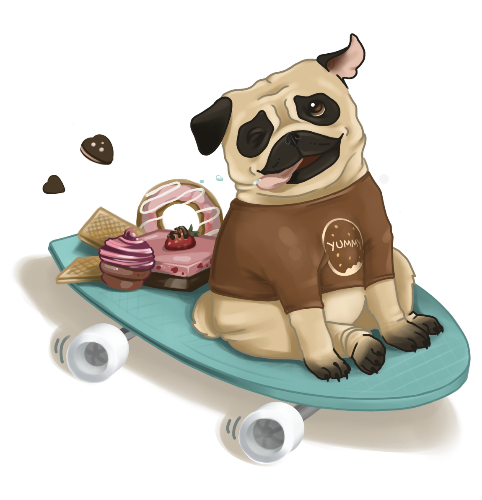

yummy pug
Всім привіт, я Ямі і я мопс, який дуже сильно полюбляє солодощі. Сьогодні я розкажу
вам, чому саме солодощі і
чому вони так важливі в нашому житті.
Доречі, моє імʼя з англійської мови перекладається як “Смачний”.
